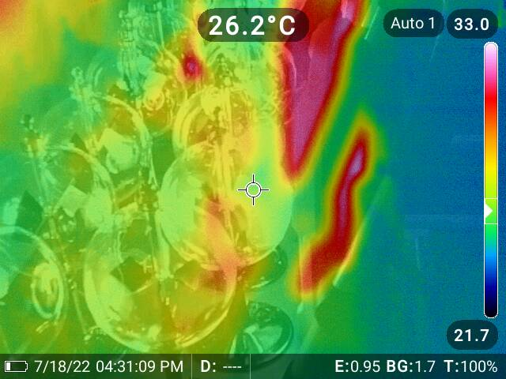
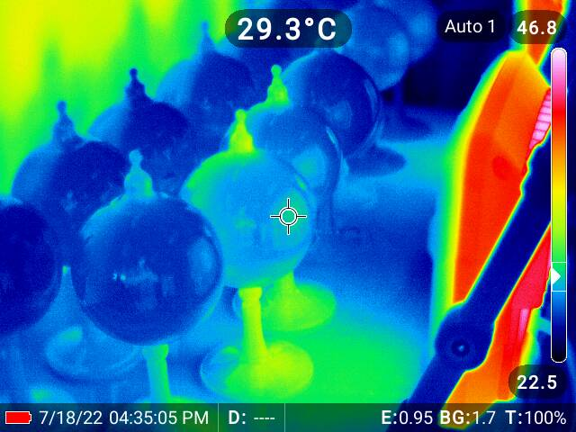
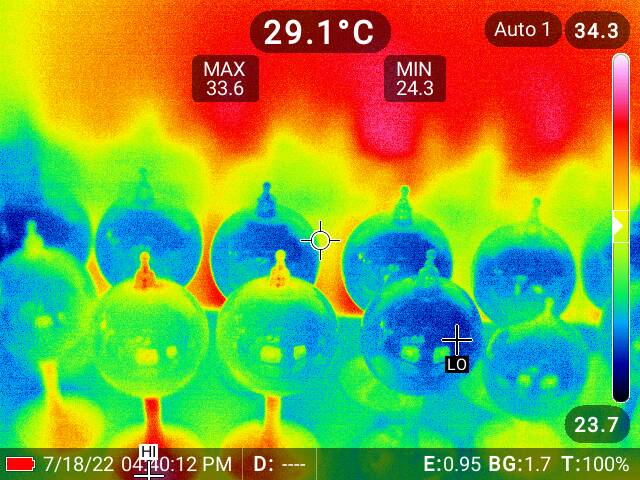

Fall 2026 · Laboratory 6
Radiometer
Measure rotation, illumination response and thermal history.
See the experiment
Animation
Bench test

Reverse rotation
Thermal images
Images from our November 16 test with Joe Condon. Browse all 19 images using the arrows. Open any image to inspect its original readings and color scale.








These are apparent surface readings, not temperatures of the sealed vanes. Each image uses an automatic color scale; identical colors across images need not mean identical temperatures. The camera’s displayed date was not set correctly. These views are not a calibrated cooling time series.
Full-length radiometer recordings on YouTube
All recordings are silent. The times below are playback durations. For vane speed, count frames in the original camera file and use the capture frame rate.
May bench tests
- High-speed vane recording (1:46)
- Radiometer, lamp and light meter (0:19)
- Camera and tripod setup (1:25)
- Lamp and bulb placement (0:09)
Lamp and camera setup
- Lamp placement and radiometer screening (3:13)
- Radiometer array under two lamps - first view (0:15)
- Radiometer array under two lamps - second view (0:03)
- Chronos camera controls - first demonstration (0:48)
- Chronos camera controls - second demonstration (0:22)
- Radiometer array - additional bench recording (2:31)
Rotation, reversal and low light
- Tall and spherical radiometers under illumination (1:13)
- Tall radiometer reversal after lamp-off (1:01)
- Two tall radiometers - position swap and reversal (2:40)
- Tall rotor reversal and spherical rotor recoil (3:14)
- Low-light test - white handheld light (0:37)
- Low-light test - blue-looking handheld light (1:47)
Research recordings
- My Radiometer - 2017 (0:38)
- Radiometer - 2018 (0:17)
Prepare and analyze
In the lab: record and check your files. Save the original Chronos and phone videos for Stages A and B. Play each saved file before leaving. Check that the hub and a vane edge are sharp and visible after the lamp goes off, the lamp-off cue is clear, the clip covers the required interval, and both rotors are in frame for paired tests. Keep the capture frame rate, bulb IDs, lux and clip start delays with the files. Re-record any missing or unusable clip while the setup is available.
Tall-bulb reversal team, in both A and B. Keep both rotors in frame. Start off_start just before switching the lamp off. Record up to 17 seconds, then save and re-arm. Take three more 17-second clips, starting each as soon as Chronos is ready. Name them A_off_event01 to A_off_event03 (use B_ in Stage B) and log the actual start time of each clip after OFF. Keep the fixed phone recording continuously from at least 5 seconds before OFF through at least 150 seconds after OFF, including every Chronos save gap. If either rotor is still moving, keep filming until both stop. After both light tests, only this team runs the hair-dryer test on the same R1 with the lamp off.
At home: analyze the recordings. Mark passages, check the direction and any reversal, calculate RPM in MATLAB, and prepare your plots and report.
Laboratory guide
See the PDF for your group’s procedure and report requirements.
Pre-Lab 6
Complete Q1–Q6: short guided reading, measurement planning and molecular Monte Carlo.
Lecture 07 · Radiometer
Course videos, molecular mechanism and the complete bench sequence.
MATLAB files
At home, mark passages, calculate RPM and compare illumination runs using your recorded settings.
More setup and camera videos
Camera and lamp setup
Silent excerpts show the equipment and camera workflow. Use the original acquisition file and verified capture rate for passage timing.
Earlier demonstrations
Prior apparatus recordings from May 2026. These silent excerpts demonstrate setup and vane appearance; their playback time is not a verified acquisition clock.